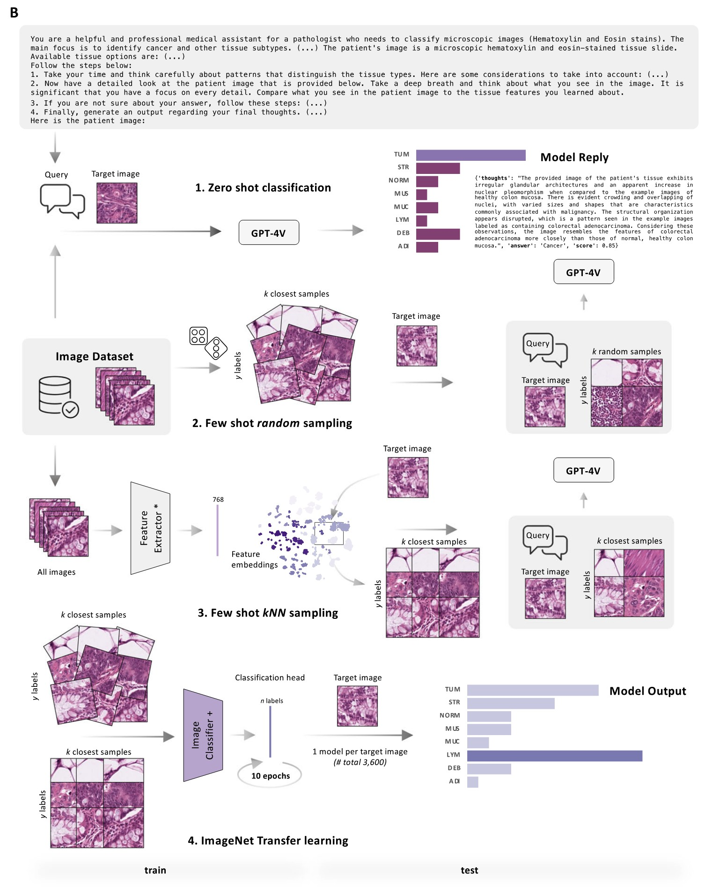
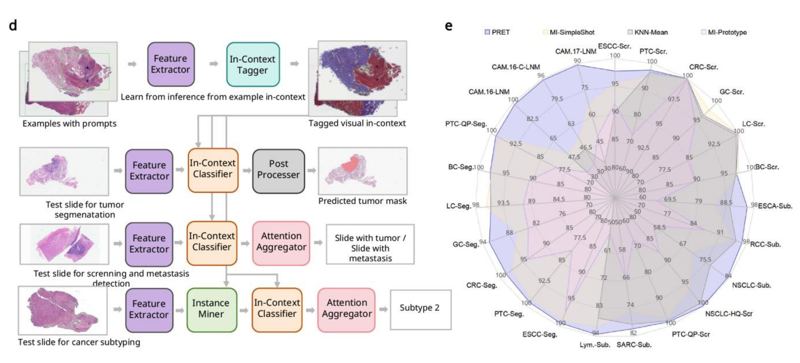
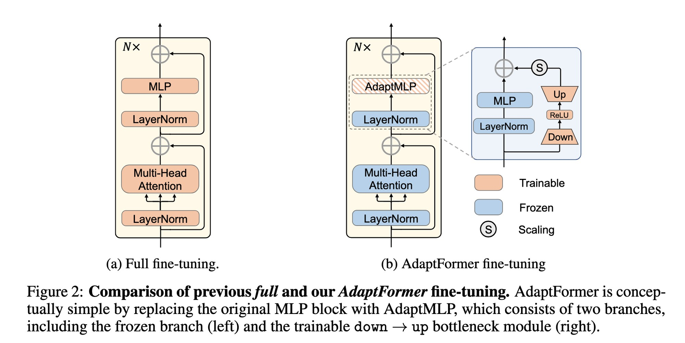
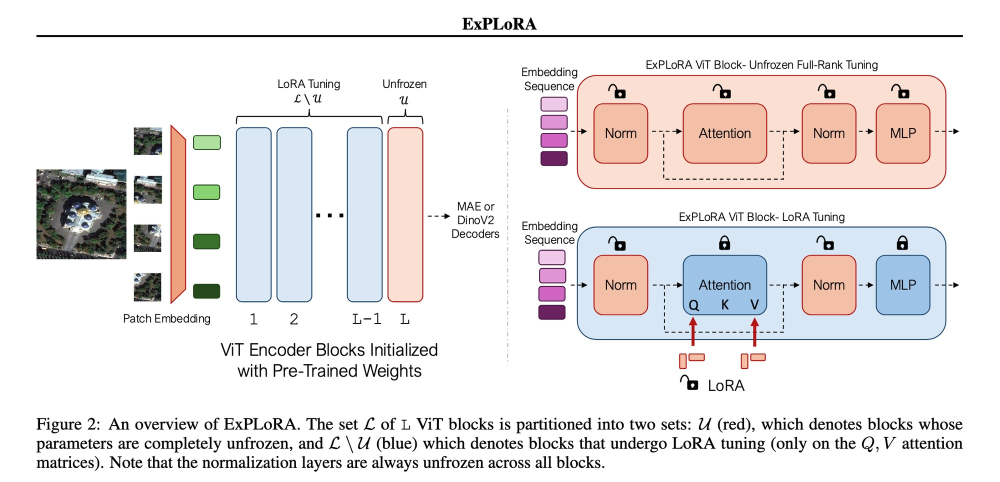
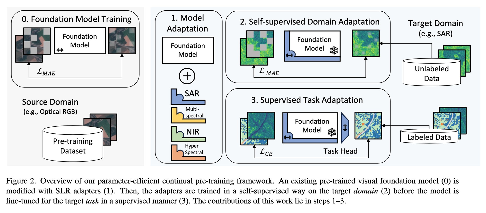
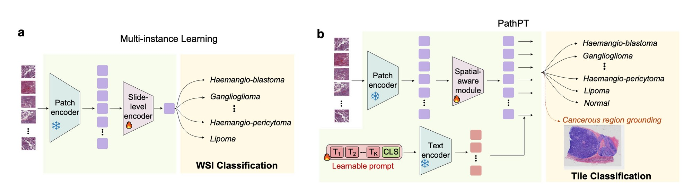
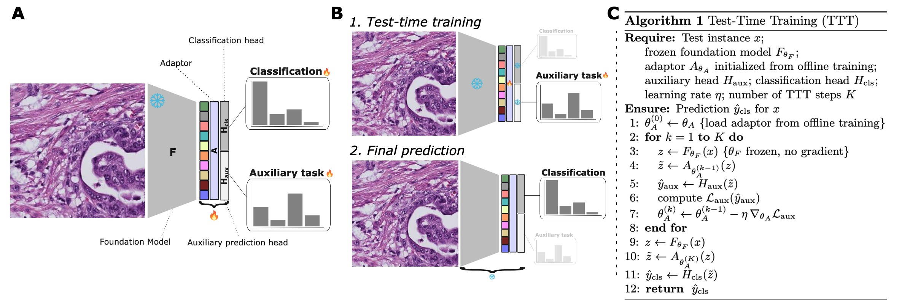
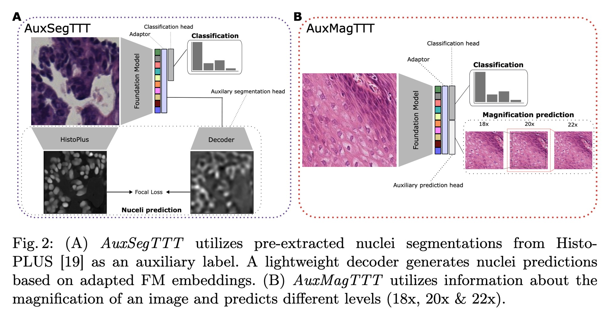
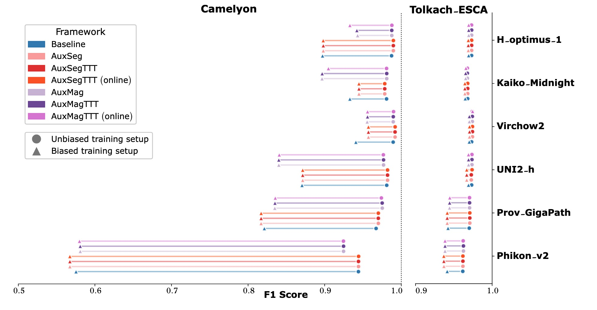
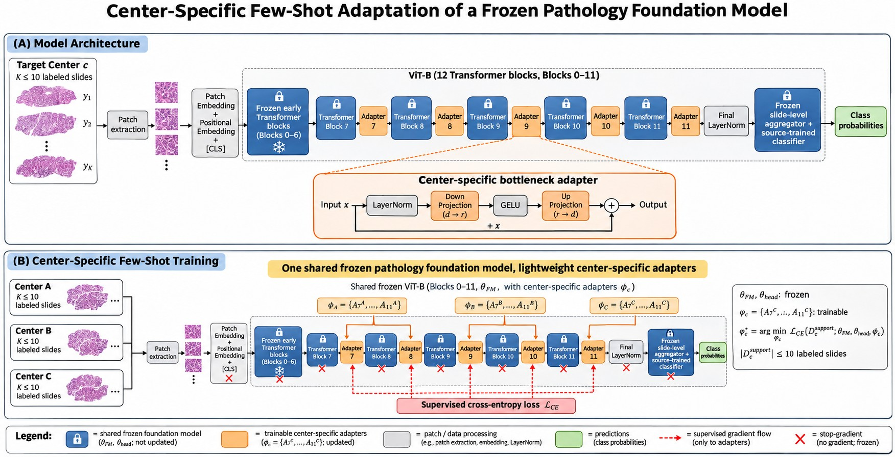

内部 adapter 的小样本微调
在 block 7–11 后串联 bottleneck adapter，主干冻结，每个中心用不超过 10 张带标注切片训练一套参数。
风险 样本太少，难以区分真实适配与切片级伪影；需要微调后的下游分析。
本次比较三条路线在跨中心场景下的做法：in-context learning、内部 adapter、测试时训练。关注两件事——监督信号从哪里来，适配发生在哪一层。
| 路线 | 监督信号 | 改什么 | 代表工作 |
|---|---|---|---|
| In-context learning | 带标注的示例 | 不改权重，推理时检索与提示 | Ferber 2024 · PRET 2026 |
| Internal adapter | 标注，或无标签重建目标（需 decoder） | 只训 adapter / LoRA，主干冻结 | AdaptFormer · ExPLoRA · SLR · PathPT |
| Test-time training | 无标签辅助任务 | 测试时更新 adapter | COMPAYL 2026 |
三条路线的适配单元分别是任务、模型和测试样本，都不是中心。

图：Ferber et al., Nat Commun 2024, Fig. 1B。证据：图示，未读 Methods；patch 级，通用多模态模型，不是病理基础模型。

图：PRET, Nat Cancer 2026, Fig. 2d–e。证据：摘要与图示，Methods 未读。
| 方法 | 改哪里 | 监督信号 | 代价 |
|---|---|---|---|
| AdaptFormerNeurIPS 2022 | MLP 旁路瓶颈，缩放后与残差相加 | 标注（监督式分类） | 结构最简，< 2% 参数 |
| ExPLoRAICML 2025 | 后段整块解冻 + Q/V LoRA + 全部 LayerNorm | 无标签自监督（MAE / DINOv2 重建） | 需要大量目标域无标签数据 |
| SLRCVPR 2024 | qkv / MLP 上的低秩缩放 | 无标签 MAE（需 decoder），后有标签微调 | 两阶段，adapter 与 decoder 配套 |
| PathPTNat Commun 2026 | 空间聚合模块 + 可学习文本提示 | 标注（tile 级） | 需要成熟的 VL 编码器 |
改动位置各不相同，监督信号只有两种来源：人工标注，或从无标签数据构造的重建 / 对比目标。

图：AdaptFormer, NeurIPS 2022, Fig. 2。证据：摘要与图示。

图：ExPLoRA, ICML 2025, Fig. 2。证据：全文（ICML 版 PDF），数字取自正文与附录 B.5 的 ViT-B 消融。

图：SLR, CVPR 2024, Fig. 2。证据：摘要与作者方法说明，会议版全文未逐条核验。

图：PathPT, Nat Commun 2026, Fig. 1a–b。证据：全文；附录中的 1D 卷积 + Nyström attention 与正文描述不完全一致。

图：Klöckner et al., MICCAI 2026 COMPAYL, Fig. 1A–C。证据：全文。

图：同文 Fig. 2。证据：全文。

图：同文 Fig. 4，圆点为无偏切分训练，三角为有偏切分训练。证据：全文；workshop paper，patch 级。
在 block 7–11 后串联 bottleneck adapter，主干冻结，每个中心用不超过 10 张带标注切片训练一套参数。
风险 样本太少，难以区分真实适配与切片级伪影；需要微调后的下游分析。
把标注从「任务」移到「中心内部的结构」：肿瘤区、正常区、间质；分区分割可以跨任务复用。
风险 标注成本最高，但一旦建立就是最直接的域对齐信号。
用成熟 VL 编码器或预测置信度为目标域 patch 打分，让 adapter 集中在关键 patch 上训练。
风险 伪标签噪声会自我强化，需要门控、类别平衡或源域锚定。
三条路线不互斥：A 成本最低，B 信号最强，C 是训练时的加权手段；都需要先知道域 gap 有多大。

图为 AI 生成的示意图，不是实验结果。证据：ExPLoRA 与 SLR 已证明「内部 adapter + 自监督 / 标注」在各自领域可行，此处是待验证的假设。
统一 patch 网格与 MPP，各中心等量采样，优先同一组织类型，避免把组织结构差异读成域差异。
DINOv2、Phikon-v2、Prov-GigaPath、UNI2-h、Virchow2，同一批 patch 全部过一遍，比较各自的 gap。
UMAP / t-SNE，分别按「中心」与「类别」着色，看两套结构的相对强弱。
中心间 silhouette、kNN 中心纯度、中心可分性 AUC、CKA / Procrustes 对齐度。
中心可分性 ≫ 类别可分性 → 先做域适配，走 A 或 C；类别结构被中心淹没 → 先做像素 / 染色归一化，再谈 adapter；模型之间的差异已经大于任何适配收益 → 先换模型。
这一步不产生结论，只产生「往哪条路走」的依据；如果几个模型的域 gap 都很小，A / B / C 的收益上限也有限。
配图取自原文，版权归原作者与出版方所有，仅用于学术汇报；文字中的数字均来自原文或作者报告。「证据」等级按本次实际读到的内容标注：全文 / 摘要 / 图示。